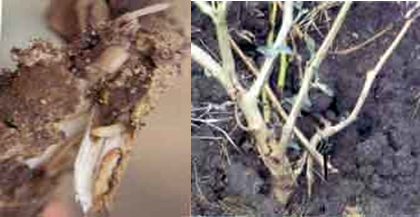
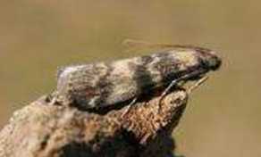

BRINJAL :: MAJOR PESTS :: STEMBORER
3. Stemborer: Euzophera perticella (Phycitidae: Lepidoptera)
Distribution and status: Indian sub-continent
Host range: Chilli, tomato, brinjal and potato
Damage symptoms
Larva bores into main stem of young and old plants and move downwards. Top shoots of young plants crump and wither. Older plants become stunted. Fruit bearing capacity is adversely affected. There is a distinct thickening of stem at the entry point.
|  |
|---|
Bionomics
Egg period: 10 days. Creamy and scale-like, laid singly / in batches on young leaves, petioles and branches. Larva: 26-58 days. Fully grown larva is creamy white with few bristle-like hairs, 20 mm. Pupa: Pupates within cocoon inside larval tunnel, 9-16 days. Adult: Greyish brown, forewings with transverse line and white hindwings. Life cycle is completed in 35-76 days.
|  |
|---|
Management
Collect and destroy the damaged and dead plants
- Use light traps @ 1/ha to attract and kill the moths.
- Conserve larval parasitoids Pristomerus testaceus, P. euzopherae
- Spray any one of the insecticide starting from one month after planting at 15 days interval. Carbaryl 50 WP 2 kg + wettable sulphur 50 WP 2 kg, endosulfan 35 EC 1.5 L + Neem oil 1.5 L, Quinalphos 25 EC 1.5 L + Neem oil 1.0 L, NSKE 5%, Azadirachtin 1.0% 1.0-1.5 L or Fenpropathrin 30 EC 250-340 ml or Thiodicarb 75 WP 625-1000 g
- Avoid using synthetic pyrethroids as they cause resurgence of sucking pests.